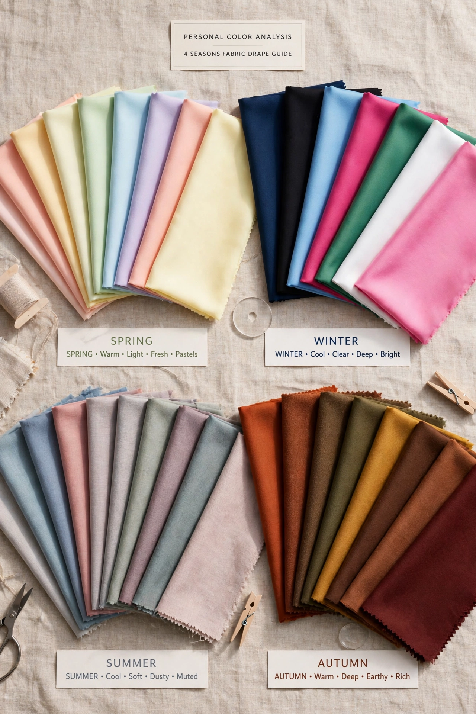

ストレート
× イエベ春
× イエベ春
ハリのある形に明るい色。元気で洗練された印象に。

無料・登録不要。結果は組み合わせごとに用意されています。
骨格だけでは、半分しか決まりません。同じウェーブでも、似合う色が夏と冬では正反対になります。形と色は別々に知っても足りず、組み合わせで初めて「似合う」が決まります。
骨格は一生変わらないので、全通りを先に置けます。太った・痩せたでは変わらない特徴だから、12通りの結果は誰にでも開かれた図鑑として並べられます。
他人のタイプを見るのも、自分の理解になります。「あの人はこれが似合う」を眺めるうちに、自分の組み合わせの輪郭も見えてきます。
気になる組み合わせを開くと、そのタイプの似合う理由と、今日の運勢まで一気に出ます。
ハリのある形に明るい色。元気で洗練された印象に。
直線の形に淡い色。上品で涼やかな印象に。
すっきりした形に深い色。大人っぽく知的な印象に。
直線と強い色。シャープで現代的な印象に。
軽い素材に明るい色。可憐で軽やかな印象に。
柔らかな線に淡い色。穏やかでフェミニンな印象に。
柔らかな形に温かい色。ぬくもりのある優しい印象に。
曲線に澄んだ色。繊細なのに凛とした印象に。
ゆとりの形に明るい色。のびやかで健やかな印象に。
ラフな質感に淡い色。やわらかく落ち着いた印象に。
天然素材の風合いに深い色。素朴で味わいのある印象に。
ゆとりの形に強い色。個性と芯の強さが出る印象に。
眺める 12通りを一覧で見て、気になる組み合わせを先に開く。
自分の組み合わせを選ぶ 知っている人は直接、知らない人は手がかりから。
結果＋今日の運勢 選んだ組み合わせの結果に、その日の運勢が付きます。
ここが診断モジュールです（方式は確定後に差し替える前提の置き場）。
骨格タイプ
パーソナルカラー
無料・登録不要。入力がサーバーへ送られることはありません。